Rice University: Design-a-thon - Ear2Ear App
January 31, 2025 - February 2, 2025
"Bringing student designers together to build innovative and user-centered solutions"
Participated in a three-day virtual design event, collaborating with a team of four as a UX/UI Designer and Researcher
to create Ear2Ear, a disaster help platform. Over 41 hours, we designed an app to connect, support, and empower individuals facing
natural disasters. Using Figma, we developed key features such as real-time disaster tracking, risk-level indicators, a social forum,
news updates, nearby resources, and disaster preparation tools. Our research focused on improving public awareness and preparedness
while emphasizing human connection. We conducted user surveys and competitive analyses to inform our design decisions. The design
process included user flow diagrams, low- and high-fidelity wireframes, and an interactive prototype. Additionally, I contributed to
project writeups and presentation slides to effectively communicate our work.
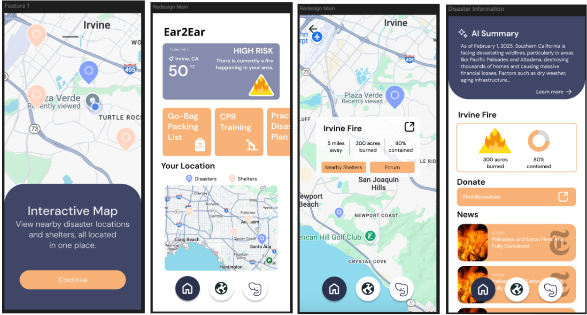
Fig 1. Key App Screenshots Pt 1
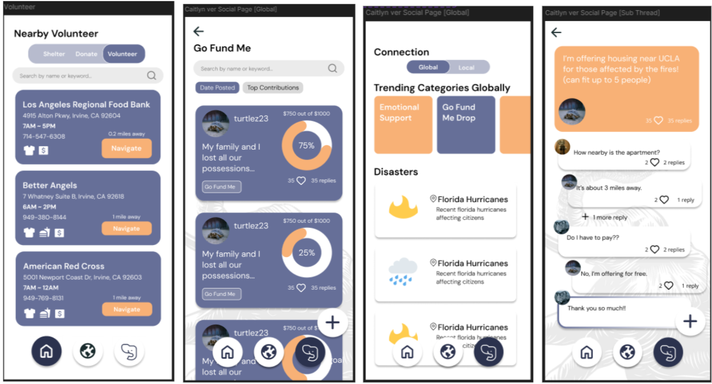
Fig 2. Key App Screenshots Pt 2
Hack at UCI: IrvineHacks - Missed Connections Project
January 24, 2025 - January 26, 2025
Largest collegiate hackathon in Orange County
Developed Missed Connections, a web application built in 36 hours at a hackathon, enabling users to find potential
missed connections through Instagram data visualization. Focused on backend development, utilizing Flask and Instagrapi APIs to
extract and retrieve public Instagram account data. Implemented JSON parsing to process user inputs and generate graph-based
visualizations. Managed project setup with Venv, collaborated via GitHub, and documented key requirements on Devpost. Successfully
deployed on Vercel and presented to judges, mentors, and peers.
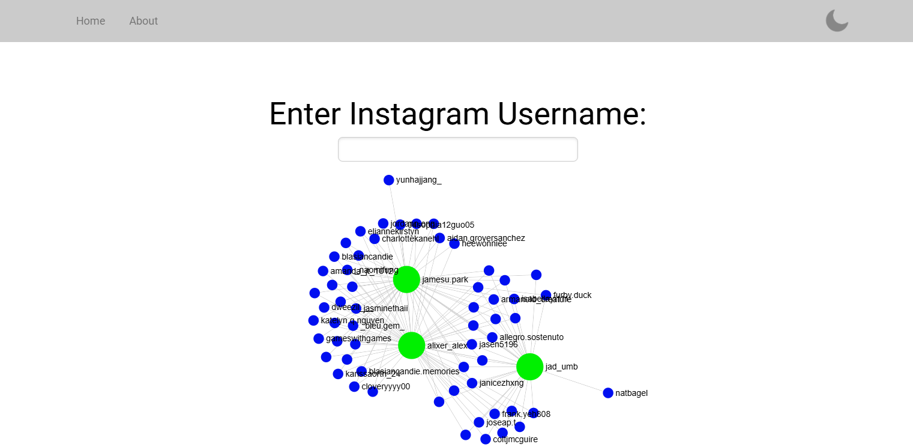
Fig 1. Main Page
Design at UCI: Project Teams - FirstStep App
January 2025 - March 2025
Quarter long design project
FirstStep is a mobile walking app designed to integrate social accountability and gamification to combat rising
physical inactivity, helping users find the time, energy, and motivation to stay active. Developed as part of Design at UCI's
Project Teams, a quarter-long design program, the project brought together UX/UI designers, graphic designers, and project leaders
to design a prototype from scratch. As a UX/UI Designer and Researcher in a team of five, key contributions included identifying a
problem statement, conducting user research through competitive analyses, user surveys, and interviews, and determining an
effective solution. The design process involved creating user flow charts, wireframing, and prototyping in Figma, focusing on
three main pages: walking, social, and stats. FirstStep placed 3rd out of 9 teams, highlighting its impact and innovative approach
to encouraging physical activity.
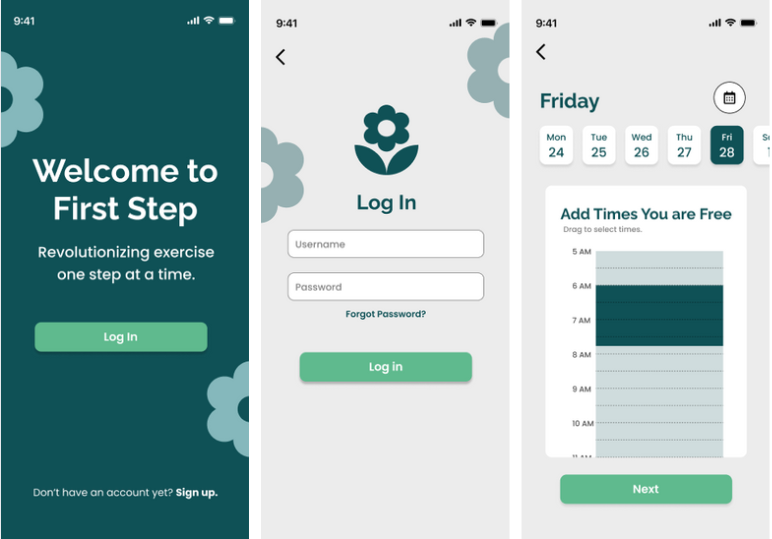
Fig 1. Key App Screenshots Pt 1
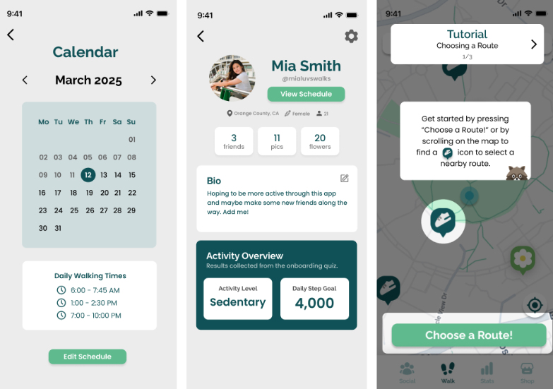
Fig 2. Key App Screenshots Pt 2
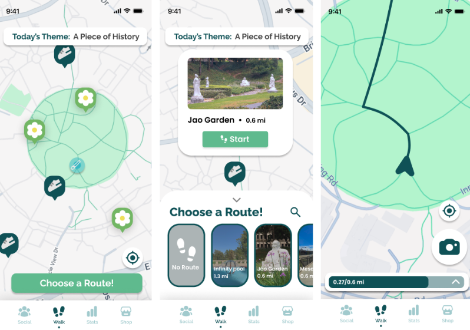
Fig 2. Key App Screenshots Pt 3
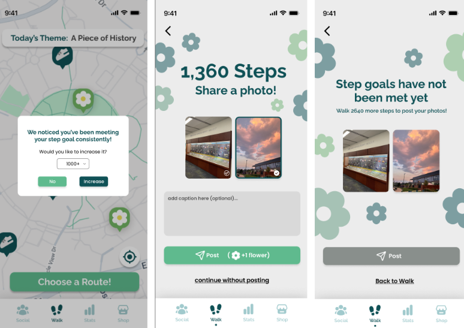
Fig 2. Key App Screenshots Pt 4
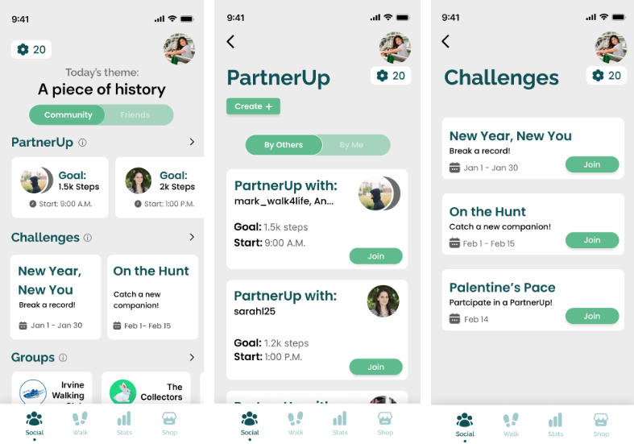
Fig 2. Key App Screenshots Pt 5
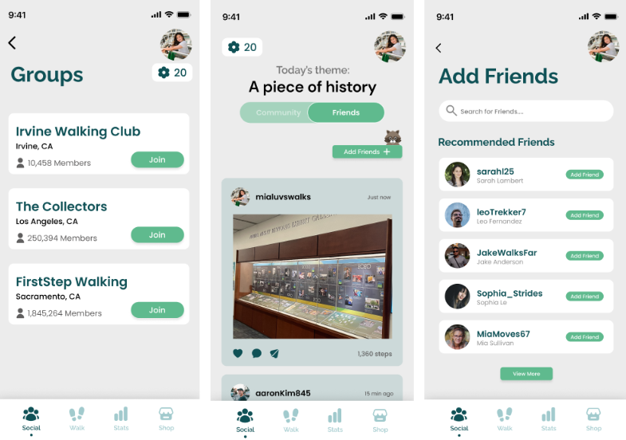
Fig 2. Key App Screenshots Pt 6
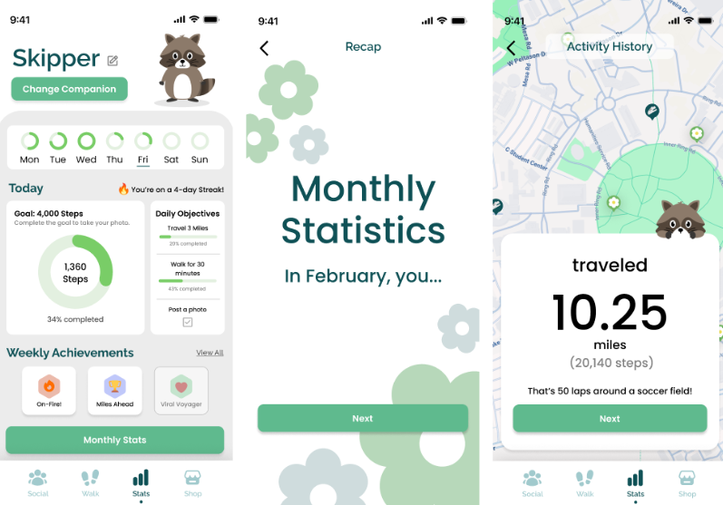
Fig 2. Key App Screenshots Pt 7
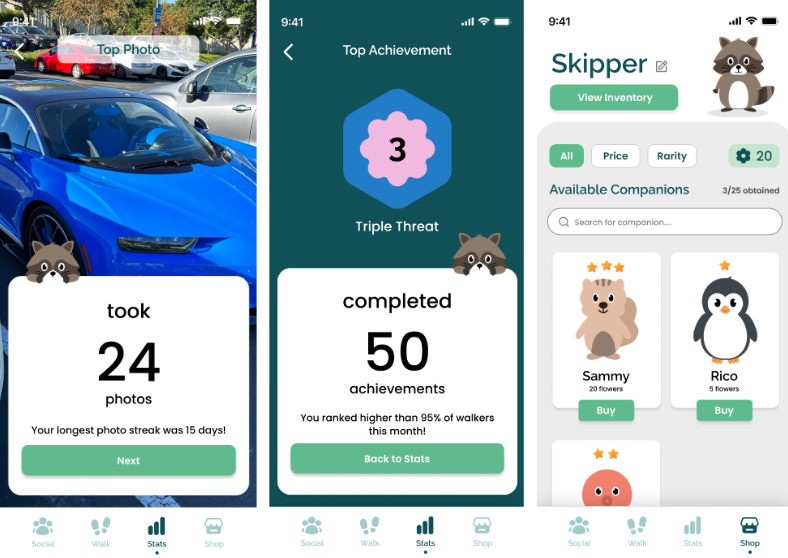
Fig 2. Key App Screenshots Pt 8
CafeFinder App
January 2025 - March 2025
Design Project
CafeFinder is a mobile app designed to help students find cafes tailored to their specific preferences.
Developed in a team of four as a quarter-long project, the app was created and prototyped using Figma, with a focus
on intuitive UX/UI design. User research, including competitive analyses, user interviews, and usability testing,
informed the design process to enhance usability. The project included designing and prototyping two key pages:
the home page, for discovering cafes based on user preferences, and the saved page, for bookmarking favorite locations.
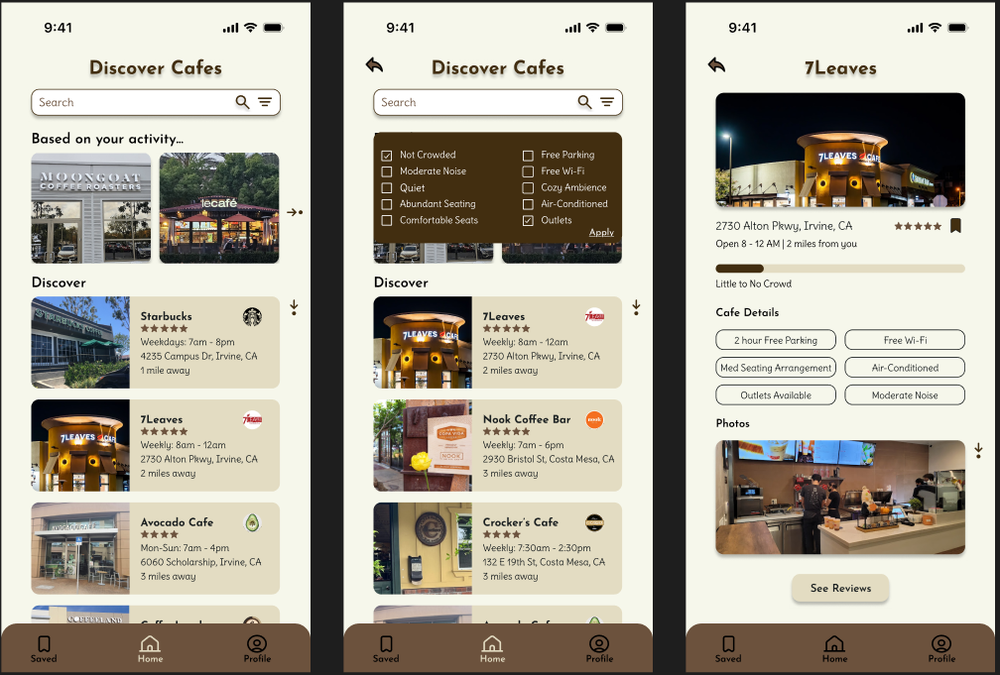
Fig 1. Key App Screenshots Pt 1
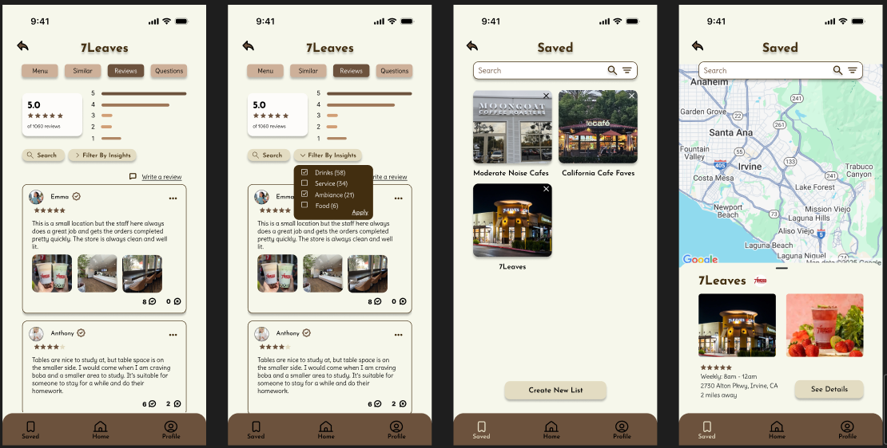
Fig 2. Key App Screenshots Pt 2
Rice University: Design-a-thon - Ear2Ear App
January 31, 2025 - February 2, 2025
"Bringing student designers together to build innovative and user-centered solutions"
Participated in a three-day virtual design event, collaborating with a team of four as a UX/UI Designer and Researcher
to create Ear2Ear, a disaster help platform. Over 41 hours, we designed an app to connect, support, and empower individuals facing
natural disasters. Using Figma, we developed key features such as real-time disaster tracking, risk-level indicators, a social forum,
news updates, nearby resources, and disaster preparation tools. Our research focused on improving public awareness and preparedness
while emphasizing human connection. We conducted user surveys and competitive analyses to inform our design decisions. The design
process included user flow diagrams, low- and high-fidelity wireframes, and an interactive prototype. Additionally, I contributed to
project writeups and presentation slides to effectively communicate our work.
Fig 1. Key App Screenshots Pt 1
Fig 2. Key App Screenshots Pt 2
Hack at UCI: IrvineHacks - Missed Connections Project
January 24, 2025 - January 26, 2025
Largest collegiate hackathon in Orange County
Developed Missed Connections, a web application built in 36 hours at a hackathon, enabling users to find potential
missed connections through Instagram data visualization. Focused on backend development, utilizing Flask and Instagrapi APIs to
extract and retrieve public Instagram account data. Implemented JSON parsing to process user inputs and generate graph-based
visualizations. Managed project setup with Venv, collaborated via GitHub, and documented key requirements on Devpost. Successfully
deployed on Vercel and presented to judges, mentors, and peers.
Fig 1. Main Page
Emily's Personal Web Hub
December 2024
Personal Project
Inspired by my passion for UI/UX design and programming, I decided to partake a personal programming project during
break. To further enhance my web development and problem-solving skills, I decided to code a personal website using HTML, CSS,
and JavaScript. Design wise, I decided to create a navigation bar with 5 tabs: Home, About, Experience, Portfolio, and Contact.
The Home page includes an image of me, professional summary, and link to my resume. The About page includes my education, skills,
and crucial college courses. The Experience page involves my work experience, clubs/societies, and awards. The Portfolio page
combines my CS and UI/UX design projects and coding experiences. The Contact page provides my LinkedIn, primary email, phone
number, and GitHub repository.
A Human-Centered Study: Twitter Sketching & Prototyping
December 2024
Project
Sketched and prototyped a new and more user-friendly version of Twitter. Created a user story, conducted an expert review,
and designed paper and digital wireframes, mockups, and an interactive prototype for Twitter's mobile and desktop versions. This was a
team effort.
A Human-Centered Study: Twitter User Research & Personas
November 2024
Project
Conducted user research and created a persona for Twitter. Recruited and interviewed 5 participants, following with brief
analysis on Figma and ending with a persona design. Created and followed an interview protocol, recorded interview notes, and reflected
throughout the processes. Since no user interface is perfect, design improvements were suggested. This was a team effort.
Hack at UCI: ZotHacks - Mind Bloom Project
November 1, 2024 - November 3, 2024
Place: 2nd out of 13 teams | Acceptance Rate: less than 13%
Designed and coded a web application called Mind Bloom in 12 hours. Used ChatGPT's API to develop a database & chatbot to track
& provide insights/feedback for individuals' moods based on a survey to tackle procrastination. Worked on the front-end UI mainly with
TypeScript, Tailwind CSS, & HTML. Created a project proposal, devpost with a brief requirements specification, pitch deck for presentation,
and a GitHub repository for team contributions. Formally presented our project to multiple judges, mentors, and other groups. Application
uses the HTTP url: http://localhost:3000/.
Fig 1. Chat Page
Fig 2. Survey Page
A Human-Centered Analysis of Instagram
October 2024
Project
Conducted a comprehensive analysis of Instagram's interface to evaluate its adherence to usability and
accessibility principles using Human-Computer Interaction (HCI) frameworks. Applied W3C's accesibility principles and usability
principles in "Designing the User Interface" by Ben Shneiderman. Identified key strengths and areas for improvement to enhance
user experience for diverse audiences, including older users.
Grin Language
May 2024
Language Design Backend Project
Created a new programming language with 13 keywords and an infinite amount of statements possible. The 13
keywords include: LET, PRINT, INNUM, INSTR, ADD, SUB, MULT, DIV, GOTO, GOSUB, RETURN, END, IF. Specifically, GOTO and GOSUB allow
line jumping when executing the program's statements. An option to start a statement with a label is possible as well. In the
console, the user can then type as many Grin statements as wanted, and all Grin programs end with a period. After execution of the
Grin statements, the result will be printed in the console.
Airport Database GUI
April 2024
Database Backend Project
Programmed a way for users to interact on a graphical user interface using Python and SQLite to add,
delete, and change information in an airport database. The database consisted of 8 tables: continent, country, region, airport,
airport_frequency, navigation_aid, runway, sqlite_master. Focused on 4 main events: application, continent, country, and region
with 3-4 subevents for each. For instance, for each continent, country, and region, users can interact on the simple GUI to search,
load, and save new and existing continents, countries, and regions. Generator functions were also used for memory optimization, and
exception handling was implemented for the GUI (which was not the main focus of this project).
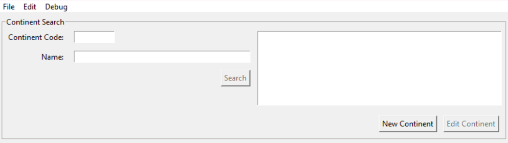
Fig 4. Continents Search Screen
Fig 5. Country Search Screen
Fig 6. Region Search Screen
Pacman 2.0
January 2023 - June 2023
Capstone Senior Project
Progammed an enhanced version of Pacman with my groupmate in HTML, CSS, and JavaScript. Designed and coded
multiple levels (10) and maps (10), receiving posive feedback. As the levels increase, the maps get larger and more complex with
the addition of ghosts. The process of building was creating a project proposal, building the maps/UI, coding the movement of the
ghosts and Pacmans (we had an option for a multiplayer mode as well), etc. From this process, I learned how to effectively
collaborate and communicate with my teammate to finish the project in the given time frame successfully. If we had more time, I
would've wanted to add an option to choose how many ghosts you want for each level and map. Game could be accessed through a
unique IP address, which I unfortunately don't have access to anymore.


.png)
.png)